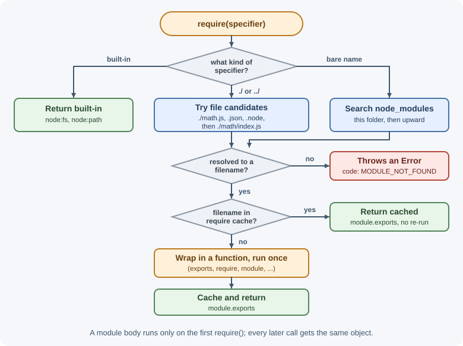
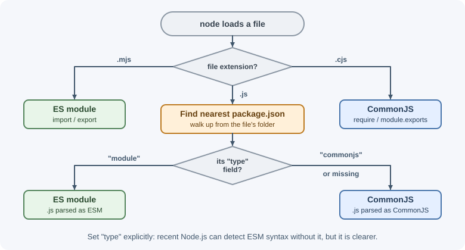
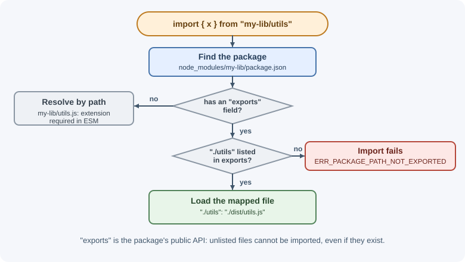

Modules: CommonJS and ES Modules¶
A module is a file whose variables and functions are private unless it
explicitly exports them. Node.js supports two module systems: the older
CommonJS (require and module.exports) and the standard
ECMAScript modules (ESM, import and export). Most new code uses ESM,
but backend developers meet both every day.
Why it matters¶
Modules let you split a backend into focused files—routes, services,
database access—without polluting a shared global scope. Knowing both
systems helps you read older code and libraries, configure package.json
correctly, and fix common errors such as require is not defined in ES
module scope or Cannot use import statement outside a module.
Real-world usage¶
- node-fetch became ESM-only in version 3: you cannot load it with
require(). Its README tells projects that cannot switch to ESM to stay on version 2, which still receives critical fixes. Many CommonJS projects hit this when they upgraded (node-fetch README). - Jest documents its ESM support as experimental: you enable it with extra configuration, and it relies on Node.js APIs that are themselves still experimental. That is why many test suites stay on CommonJS or use a transform (Jest docs: ECMAScript Modules).
- Vite documents a common interop surprise: importing a CommonJS module's
default export gives you the whole
module.exportsobject, where you may expectmodule.exports.default. The result is errors such asfoo is not a function(Vite docs: Troubleshooting). - TypeScript added the
node16,node18,node20, andnodenextmodule settings to model Node.js's dual module system: how each file's format is decided and how the two formats may import each other (TypeScript handbook: Modules reference).
Popular tools and providers: TypeScript (module: "nodenext"), bundlers
such as Vite, esbuild, and Rollup that convert between formats, and tsx
for running mixed-format TypeScript.
How it works¶
Why modules exist¶
Without modules, every script shares one global scope, names collide, and the load order must be managed by hand. A module system gives each file its own scope, declares dependencies explicitly, and loads each file once.
CommonJS¶
CommonJS was Node.js's original system.
// math.cjs
function add(a, b) {
return a + b;
}
const PI = 3.14159;
module.exports = { add, PI }; // what require() will return
// app.cjs
const { add, PI } = require("./math.cjs");
const fs = require("node:fs");
console.log(add(2, 3), PI);
Characteristics:
require()is a normal function call. It loads synchronously and can appear anywhere, including insideifblocks.- It returns the value of the target module's
module.exports. - Resolution can omit extensions:
require("./math")tries./math.js,./math.json,./math.node, then the folder./math(itspackage.jsonmain, orindex.js) and so on.
The module wrapper¶
Before running a CommonJS file, Node.js wraps it in a function:
(function (exports, require, module, __filename, __dirname) {
// your module code
});
That is why require, module, exports, __filename (the file's
absolute path), and __dirname (its folder) are available in every
CommonJS file without being imported—and why top-level variables are local
to the file.
The exports pitfall¶
exports starts as a reference to module.exports. Adding properties works;
reassigning exports breaks the link:
exports.add = add; // works: adds to module.exports
module.exports = { add }; // works: replaces the exported value
exports = { add }; // does NOTHING: only rebinds the local variable
Module caching¶
A module is executed the first time it is required. Its module.exports
is cached by resolved filename, and later require() calls return the same
object. This makes modules natural singletons:
// counter.cjs
let count = 0;
module.exports = { increment: () => ++count };
Every file that requires counter.cjs shares the same count.

ECMAScript modules (ESM)¶
ESM is the JavaScript language standard, used by browsers and Node.js.
// math.js (with "type": "module" in package.json)
export function add(a, b) { // named export
return a + b;
}
export const PI = 3.14159;
export default function multiply(a, b) { // one default export per module
return a * b;
}
// app.js
import multiply, { add, PI } from "./math.js"; // default + named
import * as math from "./math.js"; // namespace object
import { readFile } from "node:fs/promises";
console.log(add(2, 3), multiply(2, 3), math.PI);
Characteristics:
importandexportare static declarations at the top level. Node.js parses them and builds the dependency graph before running code.- Imports are live bindings: if the exporting module changes an exported
let, importers see the new value. Importers cannot reassign them. - Code runs in strict mode automatically.
- Loading is asynchronous internally, which allows top-level
await.
How Node.js decides which system a file uses¶
| File | Treated as |
|---|---|
.mjs |
Always ESM |
.cjs |
Always CommonJS |
.js with "type": "module" in the nearest package.json |
ESM |
.js with "type": "commonjs" |
CommonJS |
.js with no type field |
CommonJS, unless the file contains ES module syntax: since Node.js 22.7.0 it is then detected and run as ESM. Setting type explicitly is clearer and avoids a re-parse |
{
"name": "orders-api",
"type": "module"
}

__dirname in ES modules¶
ESM files do not have the CommonJS wrapper, so __dirname and __filename
do not exist. Use import.meta:
import path from "node:path";
console.log(import.meta.url); // file:///home/app/src/server.js
console.log(import.meta.filename); // /home/app/src/server.js
console.log(import.meta.dirname); // /home/app/src
const viewsDir = path.join(import.meta.dirname, "views");
On older Node.js versions without import.meta.dirname, use
path.dirname(fileURLToPath(import.meta.url)) from node:url.
Top-level await¶
ESM files can use await outside any function:
// config.js
import { readFile } from "node:fs/promises";
export const config = JSON.parse(await readFile("./config.json", "utf8"));
Modules that import config.js wait until it finishes. Use this for startup
work, but remember it delays everything that depends on the module.
Dynamic import()¶
import() is a function-like expression that loads a module on demand and
returns a promise. It works in both ESM and CommonJS:
if (process.env.FEATURE_REPORTS === "on") {
const { generateReport } = await import("./reports.js");
await generateReport();
}
Use it to load optional or heavy modules lazily, or to load an ES module from CommonJS code.
JSON modules¶
import pkg from "./package.json" with { type: "json" };
console.log(pkg.version);
The with { type: "json" } import attribute is required, and the JSON is
available only as the default export (no named exports). JSON modules are
stable from Node.js 22.12.0. In CommonJS, require("./data.json") works
directly.
Interoperability¶
- ESM importing CommonJS: works. The default import is the CommonJS
module.exportsvalue. Named imports often work too when Node.js can detect the export names statically.
import express from "express"; // CommonJS package, default import
import pkg from "some-cjs-lib";
const { helper } = pkg; // safe fallback for named values
- CommonJS loading ESM:
import()always works. Since Node.js 22.12.0 and 20.19.0,require()can also load an ES module synchronously, as long as its module graph has no top-levelawait. If it does, the call throwsERR_REQUIRE_ASYNC_MODULE. Version 22.12.0 still printed an experimental warning, and the feature is stable from 25.4.0. Older versions throwERR_REQUIRE_ESM. - Dual packages can publish both formats using the
exportsfield withimportandrequireconditions.
Resolution rules¶
| Specifier | CommonJS | ESM |
|---|---|---|
./file (relative) |
Extension optional; tries .js, .json, .node, then index.js |
Full path with extension required: ./file.js |
Folder ./utils |
Loads the folder's package.json main, or ./utils/index.js |
Not supported (ERR_UNSUPPORTED_DIR_IMPORT); import the file explicitly |
express (bare) |
Searches node_modules folders upward |
Same, but respects the package's exports field |
node:fs |
Built-in module | Built-in module |
The exports field in a package's package.json defines its public
entry points. Files not listed there cannot be imported, even if they exist:
{
"name": "my-lib",
"type": "module",
"exports": {
".": "./dist/index.js",
"./utils": "./dist/utils.js"
}
}

Circular dependencies¶
When module A imports B and B imports A, one of them sees the other partially initialized.
- In CommonJS, B receives A's
module.exportsas it is at that moment—often an incomplete object. - In ESM, live bindings help, but accessing an exported
let,const, orclassbefore it is initialized throws aReferenceError.
Fix circular dependencies by moving shared code into a third module, or by passing dependencies as function parameters.
The node: prefix¶
Import built-in modules as node:fs, node:path, and so on. The prefix
makes the source obvious and, in CommonJS, bypasses the require cache.
Older built-ins load even without it: require("http") always returns the
built-in module. Newer built-ins such as node:test and node:sqlite
exist only with the prefix, so their short names stay free for npm
packages.
When to use and when not to use¶
- Use ESM (
"type": "module") for new applications and new libraries. It is the language standard, supports top-levelawait, and is what browsers, Deno, and Bun use. - Use CommonJS when you maintain an existing CommonJS codebase, or when a tool you depend on still handles CommonJS more reliably (for example Jest without extra configuration).
- Use
.mjs/.cjsfor the odd file that must differ from the package'stype, such as a CommonJS config file in an ESM project. - Use dynamic
import()for optional features and heavy modules that are not needed at startup. - Avoid mixing both styles in one file, and avoid publishing a library as both formats unless you must support old Node.js versions. Two copies of the same library in one process (one CommonJS, one ESM) do not share state.
| Situation | Choose | Reason |
|---|---|---|
| New API or service | ESM | Standard syntax, top-level await, future-facing |
| Existing large CommonJS app | Stay CommonJS; migrate gradually | Migration touches every import path |
| Library for Node.js 22.12+ only | ESM | Those versions can require() it too |
| Library that must support older Node.js | Dual package via exports conditions |
CommonJS users there cannot require() ESM |
| Test suite on Jest | CommonJS or a transform | Jest's native ESM support is experimental |
CommonJS and ESM compared¶
| Aspect | CommonJS | ES modules |
|---|---|---|
| Syntax | require(), module.exports |
import, export |
| Standard | Node.js convention | ECMAScript language standard |
| Loading | Synchronous, at runtime | Static graph, async loading |
| Conditional loading | require() anywhere |
import() (async) |
Top-level await |
No | Yes |
__dirname / __filename |
Yes | import.meta.dirname / import.meta.filename |
| File extensions in imports | Optional | Required for relative paths |
| Strict mode | Opt-in | Always |
| Exports | The module.exports object; destructured values do not update |
Live bindings |
Practical examples¶
A small ESM project layout¶
orders-api/
├── package.json { "type": "module" }
└── src/
├── server.js import { app } from "./app.js";
├── app.js import { ordersRouter } from "./routes/orders.js";
└── routes/
└── orders.js export const ordersRouter = ...
Converting a CommonJS module to ESM¶
Before (CommonJS, total.cjs):
const path = require("node:path");
const { formatPrice } = require("./format");
module.exports = function renderTotal(items) { /* ... */ };
After (ESM, total.js in a "type": "module" package):
import path from "node:path";
import { formatPrice } from "./format.js"; // extension now required
export default function renderTotal(items) { /* ... */ }
Best practices¶
- Use ESM (
"type": "module") for new projects. - Always include file extensions in relative ESM imports.
- Import built-ins with the
node:prefix. - Prefer named exports for utilities; they are easier to search for and refactor.
- Keep modules focused; a module that exports everything becomes a hidden dependency hub.
- Avoid circular dependencies; extract shared code instead.
- Use dynamic
import()for optional or heavy modules.
In production¶
- The app will not start after a dependency upgrade.
- Symptom: startup crashes with
Error [ERR_REQUIRE_ESM]: require() of ES Module ... not supported. - Detect: the stack trace names a package that recently released a new major version.
- Cause: the dependency became ESM-only, and the app runs on a Node.js
version older than 22.12/20.19 that cannot
require()ESM. - Fix: upgrade Node.js, load the package with
await import(), or pin the last CommonJS-compatible major until you migrate. - Builds pass but production crashes on imports.
- Symptom:
ERR_MODULE_NOT_FOUND: Cannot find module '/app/dist/utils'. - Detect: the missing path has no
.jsextension, while the compiled file isdist/utils.js. - Cause: TypeScript or a bundler emitted extensionless relative imports, which ESM does not resolve.
- Fix: write
./utils.jsin source imports and compile withmodule: "nodenext", or bundle the app. - A library upgrade breaks deep imports.
- Symptom:
ERR_PACKAGE_PATH_NOT_EXPORTEDfor an import such assome-lib/dist/internal/helpers. - Detect: the new version's
package.jsongained anexportsfield. - Cause:
exportshides every file it does not list. - Fix: import only documented entry points, or ask the maintainers to export the subpath.
- Shared state is not shared.
- Symptom: a singleton (a config cache, a metrics registry) appears
twice, or
instanceofchecks fail for objects from the same library. - Detect: log the resolved file path of the library from both places; one is the CommonJS build and one the ESM build.
- Cause: some code
require()s the library and other codeimports it, so a dual package is loaded in both formats. - Fix: load it one way throughout the app, or keep state in a single format-neutral module.
Important terminology¶
- Module: A file with its own scope that exports selected values.
- CommonJS: Node.js's original module system using
requireandmodule.exports. - ES module (ESM): The standard JavaScript module system using
importandexport. - Named export: An export identified by its name.
- Default export: The single main export of a module.
- Live binding: An ESM import that reflects the exporter's current value.
- Module cache: Storage that makes each module run once per process.
exportsfield: Thepackage.jsonmap of a package's public entry points.- Bare specifier: An import path such as
expressthat refers to a package rather than a file.
Common mistakes and misconceptions¶
- Omitting
.jsin ESM imports, causingERR_MODULE_NOT_FOUND. - Using
requirein an ES module, causingrequire is not defined in ES module scope. Useimport, orcreateRequirefromnode:moduleif you truly needrequire. - Using
importin a CommonJS file without"type": "module"or a.mjsextension. - Reassigning
exportsinstead ofmodule.exports. - Expecting
__dirnamein ESM. - "
importandrequireare interchangeable." They differ in timing, bindings, and resolution rules.
Revision questions¶
- How does Node.js decide whether a
.jsfile is CommonJS or ESM? - Why does
exports = {...}not export anything? - What is module caching, and how does it make modules behave like singletons?
- How do you get the current file's folder in an ES module?
- When would you use dynamic
import()? - What does the
exportsfield inpackage.jsoncontrol?